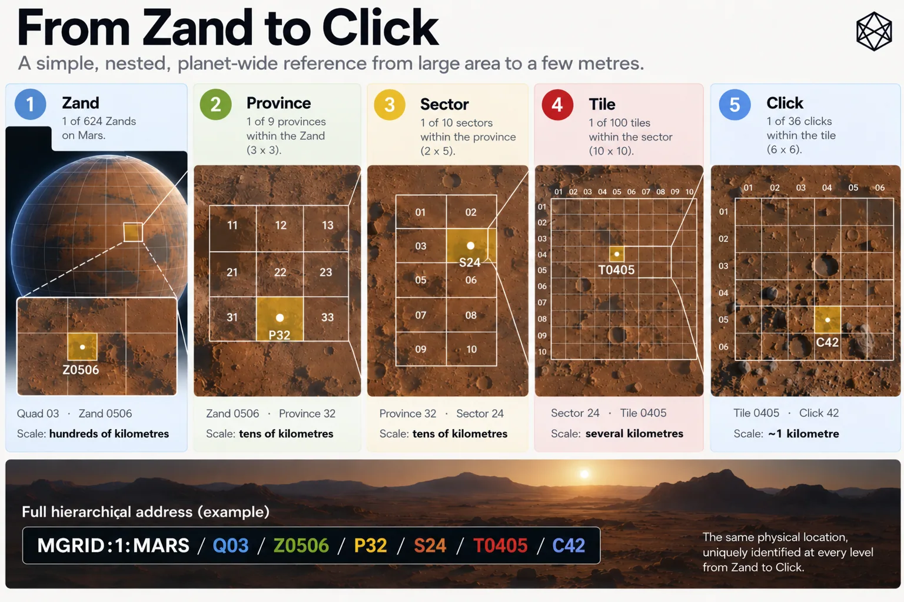

From Zand to Click
The Nested Civil Hierarchy
The easiest way to understand the GRID below Zand level is to keep one point on Mars fixed and shrink the geography around it.
Take a notional maintenance site at 41.351°N, 68.421°E. There is nothing special about the location. It might eventually contain a communications relay, an emergency shelter, a power installation or simply a rover whose designers were slightly too optimistic about tyre life.
Because the site lies below 72° north, it sits inside Regular GRID, where the subdivision pattern is fixed. Its lower GRID path is:
Zand → Province → Sector → Tile → Click
Z0506 → P32 → S24 → T0405 → C42
The code is less important than what happens to the physical scale.
One place, five frames

Read a description of this illustration
The worked regular hierarchy descends by a three-by-three split, then two-by-five, ten-by-ten and six-by-six. This reaches a Click of roughly kilometre scale; only the separate BAR Court and Cell subdivisions reach a few metres.
At 41.351° north, the site lies inside the 6° latitude Band from 36° to 42°N. At 68.421° east, it lies inside the 15° longitude Zone from 60° to 75°E. Their intersection is Zand Z0506.
A regular Zand is 6° high by 15° wide. Around this latitude, that means hundreds of kilometres in each direction: enough to contain settlement clusters, major infrastructure corridors and large stretches of Mars where very little may be happening at all. Zand is still regional geography on a grand scale.
Every regular Zand divides into a 3 × 3 arrangement of Provinces. Each Province therefore spans:
2° latitude × 5° longitude
Our site lies in the third latitude row and second longitude column of its Zand, giving P32.
At roughly 41° north, that Province is about 118 kilometres north–south and a little over 220 kilometres east–west. It is still large, but now recognisably an operating region rather than a major slice of the planet.
Province P32 then divides into two latitude rows and five longitude columns, giving ten Sectors. Each regular Sector is exactly:
1° × 1°
The site falls in the second row and fourth column, so:
P32 → S24
At this latitude, S24 is roughly 59 kilometres north–south by 45 kilometres east–west. That is a scale at which transport routes, settlement approaches, industrial sites and regional infrastructure begin to share the same operational map.
Each Sector then divides into 10 × 10 Tiles. A regular Tile is:
0.1° × 0.1°
6 arcminutes × 6 arcminutes
Our location lies in Tile row four and column five:
S24 → T0405
At 41° north, that is roughly six kilometres north–south by four and a half kilometres east–west. This is recognisably local geography. A settlement might occupy several Tiles; a substantial industrial or scientific site might sit mostly inside one.
Finally, each Tile divides into 6 × 6 Clicks.
A regular Click spans:
1 arcminute × 1 arcminute
Our site lies in the fourth Click row and second column, giving:
T0405 → C42
So the complete lower path is:
Z0506 / P32 / S24 / T0405 / C42
At this latitude, the Click is just under one kilometre north–south and roughly three-quarters of a kilometre east–west. It is not exactly one square kilometre, nor are Clicks physically identical across Mars. But it is firmly in the kilometre-scale range GRID was designed to reach.
The location itself has not moved by a millimetre.
Only the frame around it has become smaller.
Why the numbers change
There is a deliberate irregularity in the sequence:
Zand → 3 × 3 Provinces
Province → 2 × 5 Sectors
Sector → 10 × 10 Tiles
Tile → 6 × 6 Clicks
A mathematically prettier hierarchy might repeat the same branching rule forever. Four by four at every level would look splendid in a specification. Powers of ten would be reassuringly decimal.
GRID does neither.
The reason is straightforward: the target scales came first.
A 6° × 15° Zand needs to descend to a substantial regional unit. Dividing it three ways in each direction gives Provinces of 2° × 5°.
The next useful target is around one degree. Dividing that Province into two latitude rows and five longitude columns produces 1° × 1° Sectors exactly.
From one degree, decimal subdivision becomes useful. A 10 × 10 split produces Tiles of 0.1°, which is 6 arcminutes.
And six divides those six arcminutes directly into 1-arcminute Clicks.
So the branching ratios differ because the intended scales differ. The design did not start with a favourite recursive number and discover whatever geography fell out of it afterwards.
There is a useful engineering principle hidden in that choice.
Regularity is valuable when it makes the system easier to use or reproduce. It is not valuable merely because repetition looks elegant. Here, forcing one branching ratio through every level would have made the arithmetic tidier while making at least some of the resulting geographic scales less useful.
The hierarchy is therefore regular in something more important than multiplication.
It is regular in containment.
Containment is the invariant
One regular Zand contains nine Provinces. Those contain ninety Sectors, then 9,000 Tiles, then 324,000 Clicks.
Those totals are useful as a check, but they are not how anyone needs to hold the system in their head.
The essential property is simpler:
every child has exactly one parent.
A Click belongs to one Tile. That Tile belongs to one Sector. The Sector belongs to one Province. The Province belongs to one Zand.
That gives every location one continuous lineage through the hierarchy.
For our example:
Q03
↓
Z0506
↓
P32
↓
S24
↓
T0405
↓
C42
The full reference is therefore:
MGRID:1:MARS/Q03/Z0506/P32/S24/T0405/C42
The identifier records the same nesting that exists in the geometry. A system working at Province scale can stop there. One working at Tile scale can continue farther. At Click level the path reaches GRID’s finest civil area.
This is why the differing subdivision ratios do not make the hierarchy structurally irregular. Nine children at one level, ten at the next, one hundred at the next and thirty-six at the last all obey the same more fundamental rule: each finer unit exists wholly inside one parent.
That rule also survives outside Regular GRID.
Near the poles, some east–west child counts will differ. Chapter 13 owns the reason and the mechanism. What matters here is simply that a polar Click still belongs to exactly one Tile, one Sector, one Province and one Zand.
The branching can adapt.
The lineage does not.
That is what allows the regular and polar geometries to remain parts of one GRID.
What the levels are for
The angular dimensions define the hierarchy exactly. Their physical size varies with latitude, so kilometre descriptions are there to provide intuition rather than specification.
Around our worked location, the descent feels roughly like this:
Zand — a major regional frame, hundreds of kilometres across.
Province — a broad operating region, still well over a hundred kilometres in scale.
Sector — tens of kilometres, useful for regional and local planning.
Tile — several kilometres, recognisably settlement and local-operational geography.
Click — roughly kilometre-scale civil geography.
The different levels do not need sharper definitions than that. Chapter 7 already established why several scales are useful; this chapter gives those scales actual GRID geometry.
The Click is the important endpoint.
At our example latitude it still covers hundreds of thousands of square metres. That makes it small enough to distinguish one local patch of Mars from the next, while remaining large enough to function as an area rather than a precise destination.
GRID therefore stops at a natural operating scale.
There is no need here to reopen the argument about what lies beneath it. For the moment, the relevant achievement is that a Zand hundreds of kilometres across can be reduced deterministically to a kilometre-scale Click through only four subdivision steps.
And the steps are easy to reconstruct:
3 × 3 → 2 × 5 → 10 × 10 → 6 × 6
Each ratio exists because it lands the hierarchy on the next useful scale.
Each resulting area sits wholly inside one parent.
Each location retains one path from Zand to Click.
The geometry nests. The next question is whether the identity itself stays put.